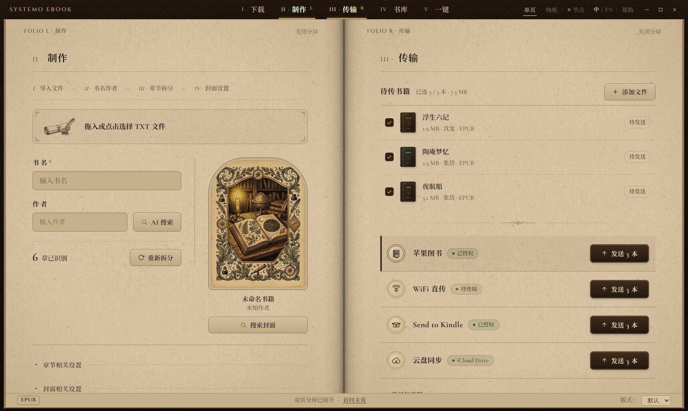
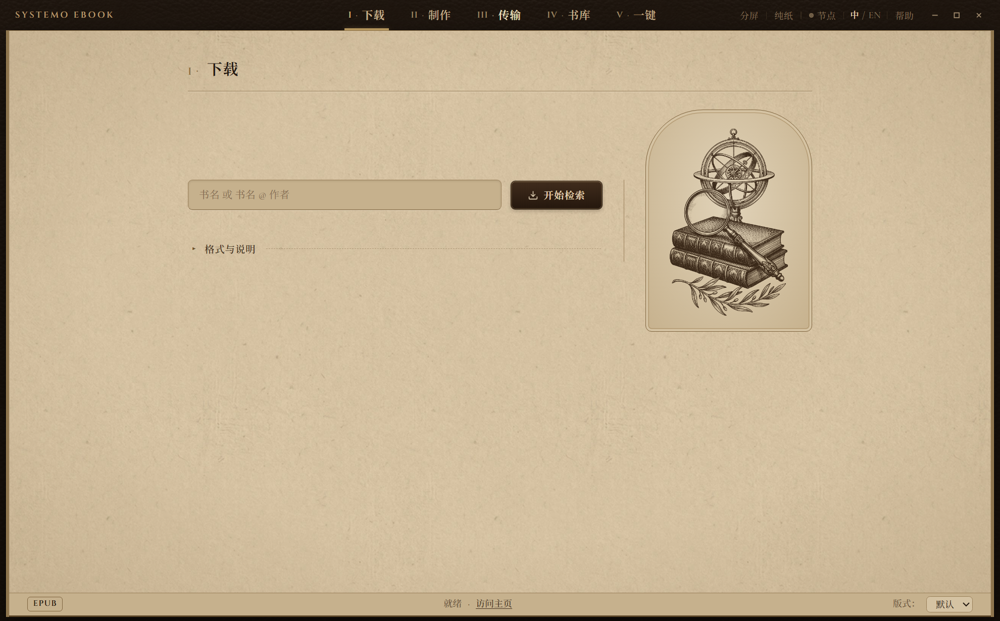
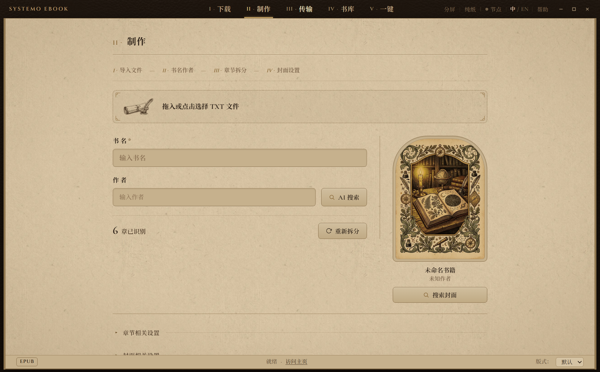
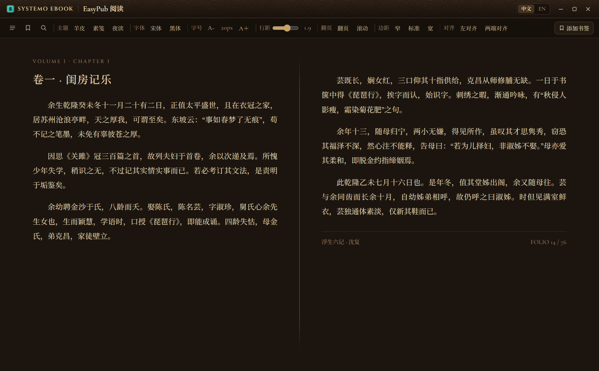

systemo ebook
Windows 本地电子书工作台：下载、制作、四通道传输与内置三主题阅读。

点击放大细看使用痛点与项目定位
在电脑上整理长篇网文或本地 TXT 传到手机、Kindle 和平板阅读，通常要在好几个工具之间来回切换：找到的文本章节错乱、缺少封面，换软件排完版，又要分别找数据线、发邮件或登录网页网盘。遇到浏览器自动升级导致传书脚本报错，或者搜出的封面模糊发虚，还得停下来花半小时排查工具本身。
项目定位：把网文与本地 TXT 整理成规范 EPUB 并送到常用阅读设备，全程在本地完成，尽量减少多端倒腾与排版返工的负担。
产品形态与五步任务闭环
systemo ebook 是一个运行在 Windows 10/11 桌面端的免安装本地电子书工作台。它把过去分散在找书脚本、排版工具、传书网页与桌面阅读器里的步骤收拢到同一扇窗口内，可按需单步操作，也可勾选一键流水线连续跑完。
-
01
搜索或导入
从四大平台每批 14 本的综合推荐与轻小说 5 榜中按卷挑选，或直接拖入本地 TXT 文本。
-
02
分章与高清封面
自动识别正文卷章目录，多源横向比对挑出更高分辨率原图，并在本地离线完成封面清晰度增强。
-
03
打包规范 EPUB
将章节、目录与高清封面封装为标准 EPUB 文件，转码完成后自动清空中间临时下载目录。
-
04
四通道送达设备
按手头设备任选苹果图书（百度网盘中转）、WiFi 局域网直传、Send to Kindle 或本地云盘同步。
-
05
入库与桌面直读
成书记录跨导出目录持久保留，随时可用内置的羊皮、素笺、夜读三主题双栏阅读器打开。
v2.0.0 三个核心升级模块
1. 界面与工作台交互（Parchment V3）
- 西洋羊皮卷与衬线排印：采用低饱和暖羊皮底、古铜细线与经典衬线字阶，长时间整理书库不刺眼。
- 天头拖拽对开双页分屏：把顶栏任意页签拖向主区左右两侧即可并排展开，方便边制作成书边核对传输队列。
- 纯纸模式与双语切换：偏好极简纸面时可一键切到纯纸视图，顶栏同步支持中英双语即时切换。
2. 四通道传输与免驱授权
- 新增第 4 通道「云盘同步」：自动探测本机 iCloud Drive、OneDrive 或 Google Drive 同步文件夹，直接写入专属子目录完成跨端同步。
- 原生浏览器独立会话授权：百度网盘登录改为直接唤起本机 Chrome 或 Edge 空白会话，避开内置窗口风控拦截，同时根治状态栏转圈卡死。
- 浏览器驱动自动热更新：WiFi 局域网直传与封面兜底在后台自动匹配本机浏览器版本，日常浏览器升级后不再报错中断。
3. 封面清晰度与书库细节
- 多源同图高清选优：检索封面时先横向比对同图分辨率，挑出清晰原图再做本地离线超分，避免拿模糊缩略图硬放大。
- 轻小说原地展开选卷：浏览轻小说五个榜单时，点击卡片即可在当前位置展开分卷列表勾选下载，省去反复跳页。
- 跨目录书库与内嵌封面：即使中途更换导出目录，历史成书记录依然完整保留；传输列队直接读取并展示 EPUB 内嵌封面。
界面实景画廊
点击任意实景图可全屏放大检视，支持键盘左右方向键切换。





设计取舍与真实体验对照
-
01
不绑第三方网盘也有顺手方案
苹果图书通道原本依赖百度网盘中转；v2.0.0 补齐本地云盘同步与局域网 WiFi 直传，常用 iCloud、OneDrive 或同网直连时不必再绑网盘。
-
02
离线封面超分，不依赖外部付费密钥
清晰度增强模型直接打进本地完整包内，断网也可把模糊封面修得干净利落，不需要自己申请云端接口或担心额度耗尽。
-
03
代理内核默认静默，公开分发零私有节点
内置代理内核默认关闭并自动避让本机已有代理软件；公开源码与公开包均不夹带任何私人订阅链接，需要时可自行通过环境变量接入。
-
04
停止精简分支，单线打磨完整版
不再维护功能残缺的精简版，统一发布 262.8 MiB 免安装完整包（解压 335 文件），开箱即可使用全部转码、超分与阅读能力。
| 高频使用场景 | v1.1 过去的表现 | v2.0.0 现在的处理 |
|---|---|---|
| 往手机或平板传书 | 依赖百度网盘中转，内置授权页偶发拦截，状态栏日志有时持续转圈。 | 可唤起本机原生浏览器空白会话快速登录网盘，或直接用「云盘同步」写入本机 iCloud 目录。 |
| 本机浏览器自动升级后 | 固定驱动版本与新版浏览器脱节，WiFi 直传或封面兜底会报错中断。 | 后台自动检测并热更匹配的浏览器驱动，浏览器日常更新后无感继续传书。 |
| 整理网文与轻小说封面 | 默认取首张匹配图，遇到低清缩略图即便超分也容易发糊。 | 先在多源结果中横向比对挑出高分辨率原图再离线超分，并把封面直接内嵌显示在传输队列中。 |
四个省心的日常细节
通道状态克制收敛
四个传输通道的状态统一收进主行胶囊标签里，未操作时不展开多余提示小字，出错后一旦授权通过即自动收起旧报错。
转码完成自动清尾
长篇或多卷作品生成 EPUB 后，程序自动清理中间临时下载目录，长期使用不会越积越占硬盘空间。
出厂零个人数据
公开安装包经过完整清理与核验，不含历史书目、账号残留或私人订阅，首次解压打开就是干净空白书案。
单页与双页随时切换
笔记本小屏保持单页专注，外接大屏一键或拖拽展开对开双页，左边整理排版、右边同步操作传输。
获取、校验与使用边界
从 GitHub Releases 下载完整压缩包，解压到任意可写目录（如 D:\systemo-ebook，避免放在系统受限目录），保留整个文件夹并双击 EasyPub.exe 即可开始使用，无需额外安装运行环境。
隐私边界与免责声明
- 用爱发电：这是一个纯粹为了“让自己看书更爽”而写出来的个人折腾项目，仅供编程学习与技术研究，完全无任何商业盈利行为（不卖课、不收费、无广告）。
- 技术本质：项目中的网文/轻小说下载与封面搜刮功能，本质上是对公开网络信息的个人离线缓存与自动化重排（相当于用代码替你完成了“打开网页 ➔ 摘录文字 ➔ 加上封面排成EPUB”的机械劳动），旨在解决多设备阅读的排版与传输痛点，并非为了建立盗版分发平台。
- 版权倡导：好故事值得被温柔对待，更值得被付费支持。本工具生成的电子书仅限个人离线自用与护眼设备转码，严禁用于任何形式的二次分发、传播或商业牟利。看书遇到喜欢的作品，请一定去正版平台订阅支持原作者！